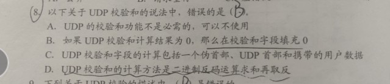
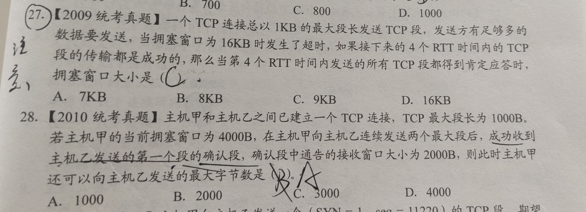
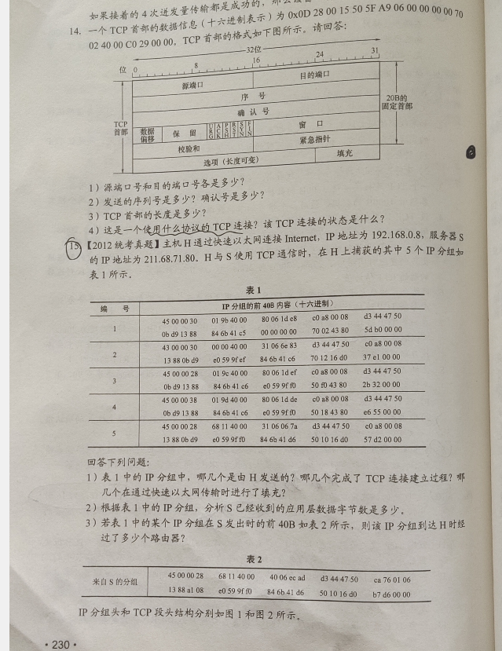
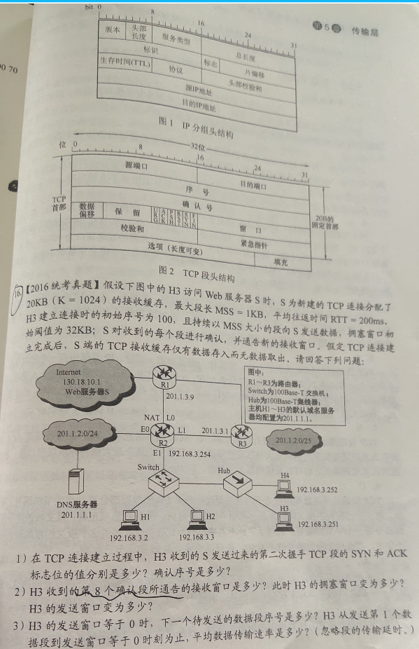
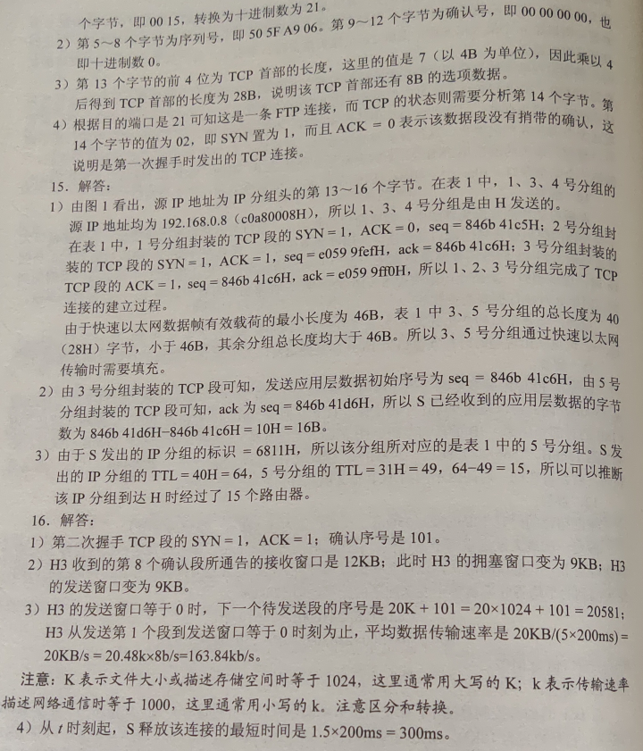
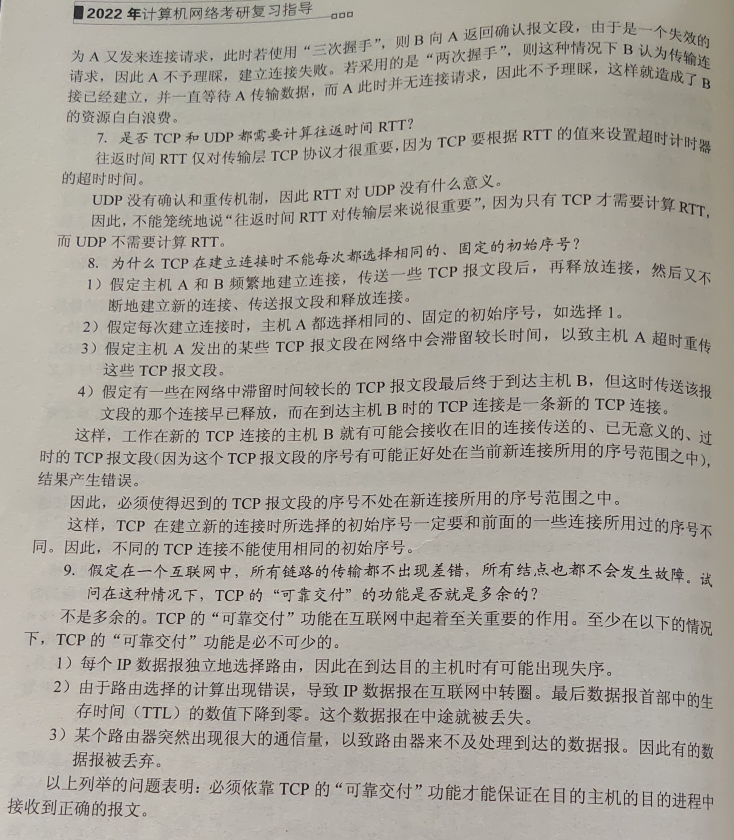
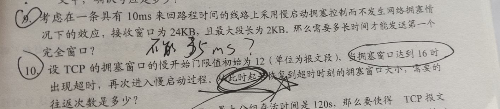

# 传输层提供的服务
# 传输层的功能
（1）传输层提供了应用进程之间的逻辑通信（即端到端的通信）。
（2）复用和分用。复用是指发送方不同的应用进程，都可使用同一个传输层协议传送数据。分用是指接收方的传输层在剥去报文的首部后，能够把这些数据正确交付到目的应用进程。
（3）传输层还要对收到的报文进行差错检测（首部和数据部分）而网络层只检查 IP 数据报的首部，不检验数据部分是否出错。
（4）提供两种不同的传输协议，即面向连接的 TCP 和无连接的 UDP。而网络层无法同时实现两种协议（即在网络层要么只提供面向连接的服务，要么只提供无连接服务）。
传输层向高层用户屏蔽低层网络核心的细节（如网络拓扑、路由协议等），使应用进程好像在两个传输层实体之间有一条端到端的逻辑通信信道。
# 端口号
应用进程通过进程号进行标识，端口号长度为 64bit，能够表示 65536（2^16）个不同的端口号。端口号只有本地意义，在因特网中不同计算机的相同端口是没有联系的。根据端口号范围可将端口号分为两类：
1）服务端使用的端口号。它又分为两类，最重要的一类是熟知端口号，数值为 0~1023. 另一类是登记端口号。使用这类端口号必须在 IANA 登记，以防止重复。一些熟知端口号如下：

客户端使用的端口号（49152~65535）又称短暂端口号（也称临时端口）：这类端口号仅在客户进程运行时才动态地选择，通信结束后，刚用过的客户端口号就 不复存在，从而这个端口号就可供其他客户进程使用。
# TCP/IP 协议栈的传输协议
面向连接的传输控制协议 (TCP)：采用 TCP 时，传输层向上提供的是一条全双工的可靠逻辑信道。TCP 提供面向连接的可靠传输服务，主要适用于可靠性更重要的场合，如文件传输协议 (FTP)、超文本传输协议（HTTP）、远程登录（TELNET）等。但也增加了许多开销，如确认、流量控制、计时器及连接管理等。
无连接的用户数据报协议 (UDP) ：采用 UDP 时，传输层向上提供的是一条不可靠的逻辑通道。远程主机的传输层收到 UDP 报文后，不需要给出任何确认。UDP 简单，执行速度比较快、实时性比较好。应用于小文件传送协议（TFTP）、DNS、SNMP 和实时传输协议（RTP）。
# IP 数据报与 UDP 数据报的区别
IP 数据报在网络层要经过路由的存储转发。
UDP 数据报在传输层的端到端的逻辑信道中传输，封装成 IP 数据报在网络层传输时，UDP 数据报的信息对路由是不可见的。
# TCP 与网络层虚电路的区别
TCP 报文段在传输层抽象的逻辑信道中传输，对路由器不可见。虚电路所经过的交换结点都必须保存虚电路状态信息。
网络层若采用虚电路方式，则无法提供无连接服务，而传输层采用 TCP 不影晌网络层提供无连接服务。
# UDP 协议
复用和分用以及差错检测（没有流量控制）
# UDP 的特点
（1）UDP 常用于一次性传输较少数据的网络应用，如 DNS、SNMP 等。
（2）UDP 提供尽最大努力的交付，即不保证可靠交付，所有维 护传输可靠性的工作需要用户在应用层来完成。
（3）UDP 是面向报文的，报文是 UDP 数据报处理的最小单位。
# UDP 的首部格式
源端口：源端口号。在需要对方回信时选用，不需要时可用全 0
目的端口：这在终点交付报文时必须使用到。
长度：UDP 数据报的长度（包括首部和数据），其最小值是 8 （仅有首部）
校验和：该字段是可选的，当源主机不想计算校验和时，则直接令该字段为全 0，检测 UDP 数据报在传输中是否有错．有错就丢弃。

# UDP 校验
UDP 的校验和只检查首部和数据部分。
校验时，若 UDP 数据报部分的长度不是偶数个字节，则需填入个全 0 字节。
如果 UDP 校验和校验出 UDP 数据报是错误的，那么可以丢弃，也可以交付给上层，但是需要附上错误报告（不能直接交给上层）。
通过伪首部，不仅可以检查源端口号、目的端口号和 UDP 用户数据报的数据部分还可以检查 IP 数据报的源 IP 地址和目的地址。

# TCP 协议
TCP 是在不可靠的 IP 层之上实现的可靠的数据传输协议，它主要解决传输的可靠、有序、 无丢失和不重复问题。
# TCP 协议的特点
（1）TCP 是面向连接的传输层协议。
（2）每条 TCP 连接只能有两个端点，每条 TCP 连接只能是点对点的（一对一）。
（3）TCP 提供可靠的交付服务，保证传送的数据无差值、部队是、不重复且有序。
（4）TCP 提供全双工通信，允许通信双方的应用进程在任何时候都能发送数据，为此 TCP 连接的两端都设有发送缓存和接收缓存，用来临时存放双向通信的数据。
（5）TCP 是面向字节流的。

TCP 报文段各字段的意义：
源端口和目的端口字段：各占 2B，端口是运输层与应用层的版务接口，运输层的复用和分用功能都要通过端口实现。
序号字段：占 4B, TCP 是面向字节流的（即 TCP 传送时是逐个字节传送的），所以 TCP 连接传送的数据流中的每个字节都编上一个序号。序号字段的值指的是本报文段所发送的数据的第一个字节的序号。
确认号字段：占 4B，是期望收到对方的下一个报文段的数据的第一个字节的序号。
数据偏移（即首部长度）：占 4 位，它指出 TCP 报文段的数据起始处距离 TCP 报文段的起始处有多远。
保留字段：占 6 位，保留为今后使用。
紧急位 URG: URG= 1 时，表明紧急指针字段有效。它告诉系统报文段中有紧急数据，应尽快传送（相当于高优先级的数据）。
确认位 ACK：ACK=1 时确认号字段才有效，ACK=0 时，确认号无效。TCP 规定，在连接建立后所有传送的报文段都必须把 ACK 置 1
推送位 PSH (Push) ：接收 TCP 收到 PSH=l 的报文段 ，就尽快地交付给接收应用进程 ，而不再等到整个缓存都填满后再向上交付
复位位 RST (Reset) : RST=l 时，表明 TCP 连接中出现严重差错（如主机崩溃或其他原因），必须释放连接 ，然后再重新建立运输连接
同步位 SYN: SYN=l 表示这是一个连接请求或连接接收报文
终止位 FIN (Finish)：用来释放一个连接。 FIN= 1 表明 此报文段的发送方的数据已发送完毕，并要求释放传输连接
窗口字段：占 2B，表示允许对方发送的数据量，单位为字节
校验和：占 2B，校验和 字段检验的范圈包括首部 和数据两部分
紧急指针字段：占 16 位，指出在本报文段中紧急数据共有多少字节（紧急数据 放在本报文段数据的最前面）
选项字段：长度可变，TCP 最初只规定了一种选项，即最大报文段长度
填充字段：使整个首部长度 是 4B 的整数倍
# TCP 连接管理
TCP 连接的阶段分为三部分：连接建立、数据传送和连接释放。TCP 连接的端点不是主机，不是主机的 IP 地址而是套接字，每条 TCP 连接唯一地被通信的两个端点（即两个套接字）确定。
# 连接的建立（三次握手）
（1）客户机的 TCP 首先向服务器的 TCP 发送一个连接请求报文段 SYN=1,seq=x。
（2）服务器的 TCP 收到连接请求拫文段后，如同意建立连接，就向客户机发回确认，并为该 TCP 连接分配 TCP 缓存和变量，SYN=1,ACK=1,ack=x+1,seq=y.
（3）当客户机收到确认报文段后，还要向服务器给出确认，并且也要给该连接分配缓存和变量，ACK=1,seq=x+1,ack=y+1.（携带数据）

连接已经建立时，再次建立会失败
# SYN 洪泛攻击
SYN 洪泛攻击发生在 OSI 第四层，这种方式利用 TCP 协议的特性，就是三次握手，攻击者发送 TCP SYN，SYN 是 TCP 三次握手中的第一个数据包，而当服务器返回 ACK 后，该攻击者就不对其进行再确认，那这个 TCP 连接就处千挂起状态 也就是所谓的半连接状态，服务器收不到再确认的话，还会重复发送 ACK 给攻击者。
SYN 洪泛攻击会浪费服务器的资源，在服务器上，这些 TCP 连接会因为挂起状态而消耗 CPU 和内存，最后服务器可能死机。
# 连接的释放（四次挥手）
（1）客户机向其 TCP 发送一个连接释放拫文段，并停止发送数据，主动关闭 TCP 连接，FIN=1,seq=u.
（2）服务器收到连接释放报文段后即发出确认，ACK=1,seq=v,ack=u+1.
（3）服务器通知客户端 TCP 释放连接，FIN=1,ACK=1,seq=w,ack=u+1.
（4）客户机受到连接释放报文后，发出确认，ACK=1,seq=u+1，ack=w+1。

# TCP 可靠传输
TCP 首部的序号字段用来保证数据能有序提交给应用层 ，序号建立在传送的字节流之上 TCP 首部的确认号是期望收到对方的下一个报文段的数据的第一个字节的序号，TCP 默认使用累计确认 ，即 TCP 只确认数据流中至第一个丢失字节为止的字节。TCP 每发送一个报文段 ， 就对这个报文段设置一次计时器。计时器设置的至传时间到期但还未收到确认时，就要重传这一报文段。再次确认某个报文段的 ACK 而发送方先前已经收到过该报文段的确认，当收到对于某个报文段的，3 个冗余 ACK ， 可以认为该报文段已经丢失。这时发送方可以立即对该报文执行重传。
# TCP 流量控制
TCP 流量控制基于滑动窗口协议的流量控制机制。接收方根据自己接收缓存的大小 ，动态地调整发送方的发送窗口大小（接收窗口 rwnd) ，限制发送方向网络注入报文的速率发送方根据其对当前网络拥塞程序的估计而确定的窗口值 ，这称为拥塞窗口 cwnd 其大小与网络的带宽和时延有关。
传输层与数据链路层的区别：传输层的流量控制机制定义了端到端用户之间的流量控制，数据链路层的；流量控制机制定义了两个中间的相邻结点的流量控制。而且在传输层滑动窗口可以动态变化，数据链路层的滑动窗口不能动态变化。
滑动窗口过小，会产生过多的 ACK；滑动窗口过大，会使路由器变得拥挤，主机可能丢失分组
发送窗口 = min {接受窗口，拥塞窗口 /}
窗口值 1000=1000B
# TCP 拥塞控制
接收窗口 rwnd：接收方根据目前接收缓存大小所许诺的最新窗口值 ， 反映接收方的容量
拥塞窗口 cwnd ：发送方根据自己估算的网络拥塞程度而设置的窗口值 ， 反映网络的当前容量
# 实现机制
慢开始：每经过一个传输轮次（即往返时延 RTT)，拥塞窗口 cwnd 就会加倍令拥塞窗口 cwnd = 1 即 — 个最大报文段长度 MSS ， 每收到 — 个对新报文段的确认后 ， 将 cwnd 加 1 使分组注入网络的速率更加合理，慢开始一直把拥塞窗口 cwnd 增大到一个规定的慢开始门限 ssthresh （阈值），然后改用拥塞避免算法。
拥塞避免：发送端的拥塞窗口 cwnd 每经过一个往返时延 RTT 就增加一个 MSS 的大小，而不是加倍，cwnd 按线性规律缓慢增长（即加法增大），而当出现 — 次超时（网络拥塞） 时 ， 令慢开始门限 ssthresh 等于当前 cwnd 的 — 半（即乘法减小）。
快重传：当发送方连续收到三个重复的 ACK 报文时 ， 直接噩传对方尚未收到的报文段 ， 而不必等待那个报文段设置的重传计时器超时。
快恢复：发送端收到连续三个冗余 ACK （即重要确认）时 ， 执行 “乘法减小” 算法，把慢开始门限 ssthresh 设置为出现拥塞时发送方 cwnd 的一半。
网络拥塞的处理：发送方检测到超时事件的发生（未按时收到确认 ， 重传计时器超时），就要把慢开始门限 ssthresh 设置为出现拥塞时的发送方的 cwnd 值的一半（但不能小于 2) 然后把拥塞窗口 cwnd 重新设置为 L 执行慢开始算法。





